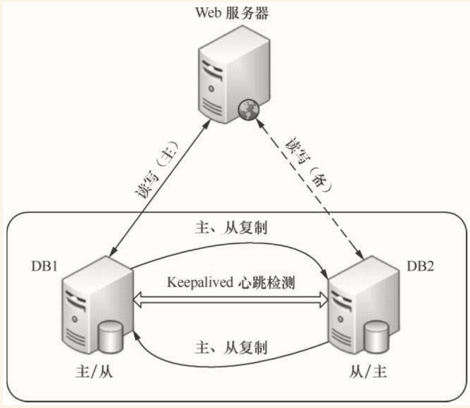

8.7. MySQL主主同步高可用架构¶
8.7.1. MySQL主主互备模式架构图¶

8.7.2. MySQL 数据库主主配置¶
环境：
1.两个数据库版本最好一致
2.两个数据库内数据保持一致，若不一致，可手动调整，比如A比B多一个库，那将这个库导入到B库，达到一致。
mysql主机：192.168.1.111 CentOS Linux release 7.5
mysql备机：192.168.1.112 CentOS Linux release 7.5
8.7.3. 主A数据库¶
1.开启binlog
vim /etc/my.cnf
[root@nginx_keepalived_master ~]# cat /etc/my.cnf
[client]
port = 3306
socket = /tmp/mysql.sock
[mysqld]
character_set_server=utf8
init_connect='SET NAMES utf8'
basedir=/usr/local/mysql
datadir=/usr/local/mysql/data
socket=/tmp/mysql.sock
log-error=/var/log/mysqld.log
pid-file=/usr/local/mysql/mysqld.pid
log-bin=mysql-bin #开启二进制日志
server-id=1 #设置server-id，和从不能一样
2.重启mysql，创建用于同步的用户账号
systemc restart mysql
登陆数据库
mysql -hlocalhost -uname -padmin#123!
创建用户并授权：用户：test密码：123456，ip配置为B的IP
CREATE USER 'test'@'192.168.1.%' IDENTIFIED BY '123456';
分配权限
GRANT REPLICATION SLAVE ON *.* TO 'test'@'192.168.1.%';
flush privileges;
锁表，禁止写入，当前窗口不能退出，这时候开启另一个终端继续操作
flush table with read lock;
stop slave;
3.新窗口操作，查看master状态，记录二进制文件名(mysql-bin.000003)和位置(73)：
SHOW MASTER STATUS;
mysql> show master status;
+------------------+----------+--------------+------------------+-------------------+
| File | Position | Binlog_Do_DB | Binlog_Ignore_DB | Executed_Gtid_Set |
+------------------+----------+--------------+------------------+-------------------+
| mysql-bin.000001 | 2594 | | | |
+------------------+----------+--------------+------------------+-------------------+
1 row in set (0.00 sec)
#导出数据库
mysqldump -uroot -padmin#123! --all-databases >/root/alldb.sql
#解锁查看binlog日志位置，如果没变证明锁定成功。从库将从这个binlog日志开始恢复
unlock table;
show master status;
8.7.4. 主B数据库¶
1.导入数据库
mysql -uroot -padmin#123! < /root/alldb.sql
2.修改配置文件
[root@nginx_keepalived_backup ~]# cat /etc/my.cnf
[client]
port = 3306
socket = /tmp/mysql.sock
[mysqld]
character_set_server=utf8
init_connect='SET NAMES utf8'
basedir=/usr/local/mysql
datadir=/usr/local/mysql/data
socket=/tmp/mysql.sock
log-error=/var/log/mysqld.log
pid-file=/usr/local/mysql/mysqld.pid
log-bin=mysql-bin #开启二进制日志
server-id=2 #设置server-id，必须唯一
重启mysql，创建用于同步的用户账号
systemc restart mysql
登陆数据库
mysql -hlocalhost -uname -padmin#123!
创建用户并授权：用户：test密码：123456，ip配置为B的IP
CREATE USER 'test'@'192.168.1.%' IDENTIFIED BY '123456';
分配权限
GRANT REPLICATION SLAVE ON *.* TO 'test'@'192.168.1.%';
flush privileges;
stop slave;
mysql> show master status;
+------------------+----------+--------------+------------------+-------------------+
| File | Position | Binlog_Do_DB | Binlog_Ignore_DB | Executed_Gtid_Set |
+------------------+----------+--------------+------------------+-------------------+
| mysql-bin.000001 | 154 | | | |
+------------------+----------+--------------+------------------+-------------------+
1 row in set (0.00 sec)
#主A上数据库授权bin-log日志
mysql> show master status;
+------------------+----------+--------------+------------------+-------------------+
| File | Position | Binlog_Do_DB | Binlog_Ignore_DB | Executed_Gtid_Set |
+------------------+----------+--------------+------------------+-------------------+
| mysql-bin.000001 | 2594 | | | |
+------------------+----------+--------------+------------------+-------------------+
1 row in set (0.00 sec)
mysql> CHANGE MASTER TO MASTER_HOST='192.168.1.112', MASTER_USER='test', MASTER_PASSWORD='123456',
-> MASTER_LOG_FILE='mysql-bin.000001', MASTER_LOG_POS=154;
Query OK, 0 rows affected, 2 warnings (0.01 sec)
mysql> unlock table;
Query OK, 0 rows affected (0.00 sec)
mysql> start slave;
Query OK, 0 rows affected (0.00 sec)
mysql> show slave status\G;
*************************** 1. row ***************************
Slave_IO_State: Waiting for master to send event
Master_Host: 192.168.1.112
Master_User: test
Master_Port: 3306
Connect_Retry: 60
Master_Log_File: mysql-bin.000001
Read_Master_Log_Pos: 154
Relay_Log_File: nginx_keepalived_master-relay-bin.000002
Relay_Log_Pos: 320
Relay_Master_Log_File: mysql-bin.000001
Slave_IO_Running: Yes
Slave_SQL_Running: Yes
Replicate_Do_DB:
Replicate_Ignore_DB:
Replicate_Do_Table:
Replicate_Ignore_Table:
Replicate_Wild_Do_Table:
Replicate_Wild_Ignore_Table:
Last_Errno: 0
Last_Error:
Skip_Counter: 0
Exec_Master_Log_Pos: 154
Relay_Log_Space: 545
Until_Condition: None
Until_Log_File:
Until_Log_Pos: 0
Master_SSL_Allowed: No
Master_SSL_CA_File:
Master_SSL_CA_Path:
Master_SSL_Cert:
Master_SSL_Cipher:
Master_SSL_Key:
Seconds_Behind_Master: 0
Master_SSL_Verify_Server_Cert: No
Last_IO_Errno: 0
Last_IO_Error:
Last_SQL_Errno: 0
Last_SQL_Error:
Replicate_Ignore_Server_Ids:
Master_Server_Id: 2
Master_UUID: b25eabdb-32a6-11e9-81d5-000c29f23347
Master_Info_File: /usr/local/mysql/data/master.info
SQL_Delay: 0
SQL_Remaining_Delay: NULL
Slave_SQL_Running_State: Slave has read all relay log; waiting for more updates
Master_Retry_Count: 86400
Master_Bind:
Last_IO_Error_Timestamp:
Last_SQL_Error_Timestamp:
Master_SSL_Crl:
Master_SSL_Crlpath:
Retrieved_Gtid_Set:
Executed_Gtid_Set:
Auto_Position: 0
Replicate_Rewrite_DB:
Channel_Name:
Master_TLS_Version:
1 row in set (0.01 sec)
ERROR:
No query specified
#主B上数据库授权bin-log日志
mysql> show master status;
+------------------+----------+--------------+------------------+-------------------+
| File | Position | Binlog_Do_DB | Binlog_Ignore_DB | Executed_Gtid_Set |
+------------------+----------+--------------+------------------+-------------------+
| mysql-bin.000001 | 154 | | | |
+------------------+----------+--------------+------------------+-------------------+
1 row in set (0.00 sec)
mysql> CHANGE MASTER TO MASTER_HOST='192.168.1.111', MASTER_USER='test', MASTER_PASSWORD='123456',
-> MASTER_LOG_FILE='mysql-bin.000001', MASTER_LOG_POS=2594;
Query OK, 0 rows affected, 2 warnings (0.02 sec)
mysql> unlock table;
Query OK, 0 rows affected (0.00 sec)
mysql> start slave;
Query OK, 0 rows affected (0.00 sec)
mysql>
mysql>
mysql> show slave status\G;
*************************** 1. row ***************************
Slave_IO_State: Waiting for master to send event
Master_Host: 192.168.1.111
Master_User: test
Master_Port: 3306
Connect_Retry: 60
Master_Log_File: mysql-bin.000001
Read_Master_Log_Pos: 2594
Relay_Log_File: nginx_keepalived_backup-relay-bin.000002
Relay_Log_Pos: 320
Relay_Master_Log_File: mysql-bin.000001
Slave_IO_Running: Yes
Slave_SQL_Running: Yes
Replicate_Do_DB:
Replicate_Ignore_DB:
Replicate_Do_Table:
Replicate_Ignore_Table:
Replicate_Wild_Do_Table:
Replicate_Wild_Ignore_Table:
Last_Errno: 0
Last_Error:
Skip_Counter: 0
Exec_Master_Log_Pos: 2594
Relay_Log_Space: 545
Until_Condition: None
Until_Log_File:
Until_Log_Pos: 0
Master_SSL_Allowed: No
Master_SSL_CA_File:
Master_SSL_CA_Path:
Master_SSL_Cert:
Master_SSL_Cipher:
Master_SSL_Key:
Seconds_Behind_Master: 0
Master_SSL_Verify_Server_Cert: No
Last_IO_Errno: 0
Last_IO_Error:
Last_SQL_Errno: 0
Last_SQL_Error:
Replicate_Ignore_Server_Ids:
Master_Server_Id: 1
Master_UUID: 750a3dc6-32a6-11e9-8c2e-000c29449e0f
Master_Info_File: /usr/local/mysql/data/master.info
SQL_Delay: 0
SQL_Remaining_Delay: NULL
Slave_SQL_Running_State: Slave has read all relay log; waiting for more updates
Master_Retry_Count: 86400
Master_Bind:
Last_IO_Error_Timestamp:
Last_SQL_Error_Timestamp:
Master_SSL_Crl:
Master_SSL_Crlpath:
Retrieved_Gtid_Set:
Executed_Gtid_Set:
Auto_Position: 0
Replicate_Rewrite_DB:
Channel_Name:
Master_TLS_Version:
1 row in set (0.00 sec)
ERROR:
No query specified
8.7.5. Mysql同步引入话题¶
附加配置
不同步哪些数据库
binlog-ignore-db = mysql
binlog-ignore-db = test
binlog-ignore-db = information_schema
同步哪些数据库
binlog-do-db = game
导致lave_IO_Running 为connecting 的原因主要有以下 3 个方面：
1、网络不通
2、密码不对
3、pos不对
Slave_SQL_Running：NO 下面会有提示，如果提示这个库已经创建无法创建等是可以跳过的
从库操作：
stop slave;
将同步指针向下移动，如果多次不同步，可以添加移动的数量
set global sql_slave_skip_counter =1;
start slave;